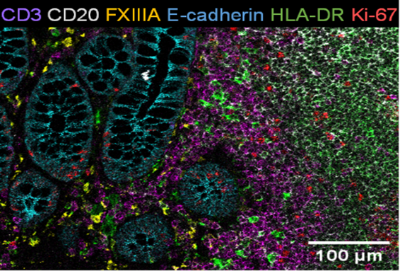

spicyPlayBook
Overview
Welcome!

Recent advances in highly multiplexed cell imaging technologies such as PhenoCycler, IMC, CosMx, Xenium, and MERFISH (and many more) have fundamentally revolutionized our ability to observe complex cellular relationships in tissue. Where previous immunohistochemistry protocols only allowed the visualization of cells that could be characterized by two or three surface proteins, cutting-edge technologies characterize cells with upwards of 50 proteins or 1000s of RNA in situ. These technologies enable precise classification of cell sub-types and provide an unprecedented depiction of cellular heterogeneity in a tissue environment. These technical developments have necessitated the development of a variety of new analytical approaches that are required to harness these new imaging technologies. On this website we will demonstrate how packages in scdney can be used to provide new insights into complex biological systems and diseases.
Packages
MoleculeExperiment

MoleculeExperiment contains functions to create and work with objects from the new MoleculeExperiment class. We introduce this class for analysing molecule-based spatial transcriptomics data (e.g., Xenium by 10X, Cosmx SMI by Nanostring, and Merscope by Vizgen). This allows researchers to analyse spatial transcriptomics data at the molecule level, and to have standardised data formats accross vendors.
Peters Couto B, Robertson N, Patrick E, Ghazanfar S (2024). MoleculeExperiment: Prioritising a molecule-level storage of Spatial Transcriptomics Data. R package version 1.6.0.
simpleSeg

Image segmentation is the process of identifying the borders of individual objects (in this case cells) within an image. This allows for the features of cells such as marker expression and morphology to be extracted, stored and analysed. simpleSeg provides functionality for user friendly, watershed based segmentation on multiplexed cellular images in R based on the intensity of user specified protein marker channels. simpleSeg can also be used for the normalization of single cell data obtained from multiple images.
Canete N, Nicholls A, Patrick E (2024). simpleSeg: A package to perform simple cell segmentation. R package version 1.8.0.
scMerge

Like all gene expression data, single-cell data suffers from batch effects and other unwanted variations that makes accurate biological interpretations difficult. The scMerge method leverages factor analysis, stably expressed genes (SEGs) and (pseudo-) replicates to remove unwanted variations and merge multiple single-cell data. This package contains all the necessary functions in the scMerge pipeline, including the identification of SEGs, replication-identification methods, and merging of single-cell data.
Lin Y, Ghazanfar S, Wang K, Gagnon-Bartsch J, Lo K, Su X, Han Z, Ormerod J, Speed T, Yang P, Yang J (2019). “scMerge leverages factor analysis, stable expression, and pseudoreplication to merge multiple single-cell RNA-seq datasets.” Proceedings of the National Academy of Sciences. doi:10.1073/pnas.1820006116.
FuseSOM

A correlation-based multiview self-organizing map for the characterization of cell types in highly multiplexed in situ imaging cytometry assays (FuseSOM) is a tool for unsupervised clustering. FuseSOM is robust and achieves high accuracy by combining a Self Organizing Map architecture and a Multiview integration of correlation based metrics. This allows FuseSOM to cluster highly multiplexed in situ imaging cytometry assays.
<0-length citation>
treekoR

treekoR is a novel framework that aims to utilise the hierarchical nature of single cell cytometry data to find robust and interpretable associations between cell subsets and patient clinical end points. These associations are aimed to recapitulate the nested proportions prevalent in workflows inovlving manual gating, which are often overlooked in workflows using automatic clustering to identify cell populations. We developed treekoR to: Derive a hierarchical tree structure of cell clusters; quantify a cell types as a proportion relative to all cells in a sample (%total), and, as the proportion relative to a parent population (%parent); perform significance testing using the calculated proportions; and provide an interactive html visualisation to help highlight key results.
Chan A (2024). treekoR: Cytometry Cluster Hierarchy and Cellular-to-phenotype Associations. R package version 1.14.0.
scFeatures

scFeatures constructs multi-view representations of single-cell and spatial data. scFeatures is a tool that generates multi-view representations of single-cell and spatial data through the construction of a total of 17 feature types. These features can then be used for a variety of analyses using other software in Biocondutor.
Cao,Y., Lin,Y., Patrick,E., Yang,P., Yang,J.Y.H. & (2022). “scFeatures: multi-view representations of single-cell and spatial data for disease outcome prediction.” Bioinformatics, 38(20), 4745-4753. ISSN 1367-4803, doi:10.1093/bioinformatics/btac590.
scHOT

Single cell Higher Order Testing (scHOT) is an R package that facilitates testing changes in higher order structure of gene expression along either a developmental trajectory or across space. scHOT is general and modular in nature, can be run in multiple data contexts such as along a continuous trajectory, between discrete groups, and over spatial orientations; as well as accommodate any higher order measurement such as variability or correlation. scHOT meaningfully adds to first order effect testing, such as differential expression, and provides a framework for interrogating higher order interactions from single cell data.
Ghazanfar S, Lin Y (2024). scHOT: single-cell higher order testing. R package version 1.18.0.
spicyR

The spicyR package provides a framework for performing inference on changes in spatial relationships between pairs of cell types for cell-resolution spatial omics technologies. spicyR consists of three primary steps: (i) summarizing the degree of spatial localization between pairs of cell types for each image; (ii) modelling the variability in localization summary statistics as a function of cell counts and (iii) testing for changes in spatial localizations associated with a response variable.
Canete N, Iyengar S, Ormerod J, Baharlou H, Harman A, Patrick E (2022). “spicyR: spatial analysis of in situ cytometry data in R.” Bioinformatics, 38(11), 3099–3105. doi:10.1093/bioinformatics/btac268.
Statial

Statial is a suite of functions for identifying changes in cell state. The functionality provided by Statial provides robust quantification of cell type localisation which are invariant to changes in tissue structure. In addition to this Statial uncovers changes in marker expression associated with varying levels of localisation. These features can be used to explore how the structure and function of different cell types may be altered by the agents they are surrounded with.
Ameen F, Robertson N, Lin D, Ghazanfar S, Patrick E (2024). “Kontextual: Reframing analysis of spatial omics data reveals consistent cell relationships across images.” bioRxiv. doi:10.1101/2024.09.03.611109.
lisaClust

lisaClust provides a series of functions to identify and visualise regions of tissue where spatial associations between cell-types is similar. This package can be used to provide a high-level summary of cell-type colocalization in multiplexed imaging data that has been segmented at a single-cell resolution.
Patrick E, Canete N (2024). lisaClust: lisaClust: Clustering of Local Indicators of Spatial Association. R package version 1.14.4.
ClassifyR

The software formalises a framework for classification and survival model evaluation in R. There are four stages; Data transformation, feature selection, model training, and prediction. The requirements of variable types and variable order are fixed, but specialised variables for functions can also be provided. The framework is wrapped in a driver loop that reproducibly carries out a number of cross-validation schemes. Functions for differential mean, differential variability, and differential distribution are included. Additional functions may be developed by the user, by creating an interface to the framework.
Strbenac D, Mann GJ, Ormerod JT, Yang JYH (2015). “ClassifyR: an R package for performance assessment of classification with applications to transcriptomics.” Bioinformatics, 31(11), 1851-1853.
This page contains examples of how to different types of analysis. We have sorted these by technology, however we recommend focusing more on the questions that can be asked, rather than the technologies that were use to address them.
| Disease | Technology | Title | Segmentation | Alignment | Clustering | Localisation | Microenvironments | Patient Classification | |
|---|---|---|---|---|---|---|---|---|---|
| Breast cancer | MIBITOF | Keren_2018 | X | X | X | ||||
| Breast cancer | MIBITOF | Risom_2022 | X | X | X | X | X | X | |
| Mouse organogenesis | seqFISH | Lohoff_2022 | X | X |
Datasets
Through the course of this spicyWorkBook, we’ll be taking advantage of several different spatial datasets that are publicly available. These datasets are all accessible within our SpatialDatasets package on bioconductor. We’ll be demonstrating several questions that could be answered or explored for each of these datasets, dependent on the available information.
Spatial Proteomics - MIBITOF
MIBI-TOF (multiplexed ion beam imaging by time of flight) is an instrument that uses bright ion sources and orthogonal time-of-flight mass spectrometry to image metal-tagged antibodies at subcellular resolution in clinical tissue sections. The datasets we have seen image approximately 40 labeled antibodies and image fields of about \(1mm^2\) at resolutions down to \(260nm\)
Triple Negative Breast Cancer - Keren_2018
A MIBI-TOF dataset profiling tissue from triple-negative breast cancer patients is used to illustrate the functionality of our Statial package. That is, identifying changes in cell state that are related to spatial localisation of cells. This dataset simultaneously quantifies in situ expression of 36 proteins in 41 patients.
Ductal carcinoma in situ - Risom_2022
A MIBI-TOF data profiling the spatial landscape of ductal carcinoma in situ (DCIS), which is a pre-invasive lesion that is thought to be a precursor to invasive breast cancer (IBC). This is currently the primary dataset used for illustration of our spicyWorkflow on Bioconductor. The key conclusion of this manuscript (amongst others) is that spatial information about cells can be used to predict disease progression in patients. We use a bunch of our packages to make a similar conclusion and cover topics such as cell segmentation, data normalisation, various tests of proportion and spatial localisation, microenvironment estimation and patient prediction.
Spatial Proteomics - CODEX
CODEX (Co-detection by indexing) is a highly multiplexed tissue imaging technique using DNA-barcoded antibodies which are later revealed by fluorescent detector oligonucleotides. The datasets using this technology can visualise up to 60 labelled antibodies at subcellular resolution.
Colorectal cancer - Schurch_2020
A CODEX dataset which aimed to characterise the immune tumour microenvironment in advanced-stage colorectal cancer. The dataset consists of 35 advanced colorectal cancer patients, with 4 images per patient for a total of 140 images. Each image is marked with a 56-antibody panel to characterise a total of 24 distinct tumour and immune cell populations. Overall, the dataset contains 240,000 cells along with clinical information including patient tumour grade, tumour type, and patient survival.
Spatial Proteomics - IMC
IMC (Imaging Mass Cytometry) is an instrument that combines laser ablation with mass cytometry to image metal-tagged antibodies at subcellular resolution in clinical tissue sections. The datasets produced by IMC can image approximately 30–40 labeled antibodies, covering tissue areas of around \(1mm^2\) with a resolution down to 1 micron.
Breast cancer - Ali_2020
Also known as the METABRIC dataset, this IMC datasets consists of 456 Primary invasive breast carcinoma patients for which their are 548 samples. Out of these 548 samples, 518 have both clinical and IMC data available. The dataset contained several clinical variables, including: Age, Chemotherapy Indicator (CT), Radiotherapy Indicator (RT), Hormone Treatment Indicator (HT), Estrogen Receptor Status(ER)) and 4 other gene indicators (MKI67, EGFR, PGR, and ERBB2). Tissue samples were acquired using a Hyperion Imaging Mass Cytometer (Fluidigm). The IMC images used a 37-antibody panel to identify a total of 22 distinct cell types.
Head and neck squamous cell carcinoma - Ferguson_2020
A IMC dataset profiling the spatial landscape of head and neck cutaneous squamous cell carcinomas (HNcSCC), the second most common type of skin cancer. The majority of HNcSCC can be treated with surgery and good local control, but a subset of large tumours infiltrate subcutaneous tissue and are considered high risk for local recurrence and metastases. The key conclusion of this manuscript (amongst others) is that spatial information about cells and the immune environment can be used to predict primary tumour progression or metastases in patients. We will use our spicy workflow to reach a similar conclusion. The dataset contains a total of 31 patients, including 9 non-progressors and 22 progressors. A 36-antibody panel was used to identify a total of 19 distinct cell types.
Spatial Transcriptomics - seqFISH
SeqFISH (sequential Fluorescence In Situ Hybridization) is a technology that enables the identification of thousands of molecules like RNA, DNA, and proteins directly in single cells with their spatial context preserved. seqFISH can multiplex over 10,000 molecules and integrate multiple modalities, such as imaging the transcriptome and proteins
Mouse organogenesis - Lohoff_2022
We use our package scHOT to analyse Lohoff et al’s study of early mouse organogenesis that was performed using a seqFISH. This analysis was adapted from a workshop that Shila and Ellis deliver as an introduction to spatial data analysis and in addition to scHOT, covers basic manipulation and visualisation of SpatialExperiment objects.